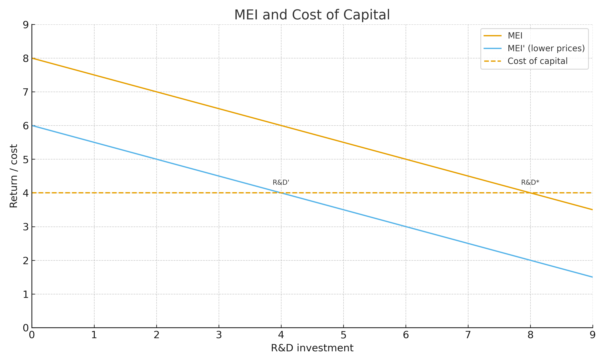
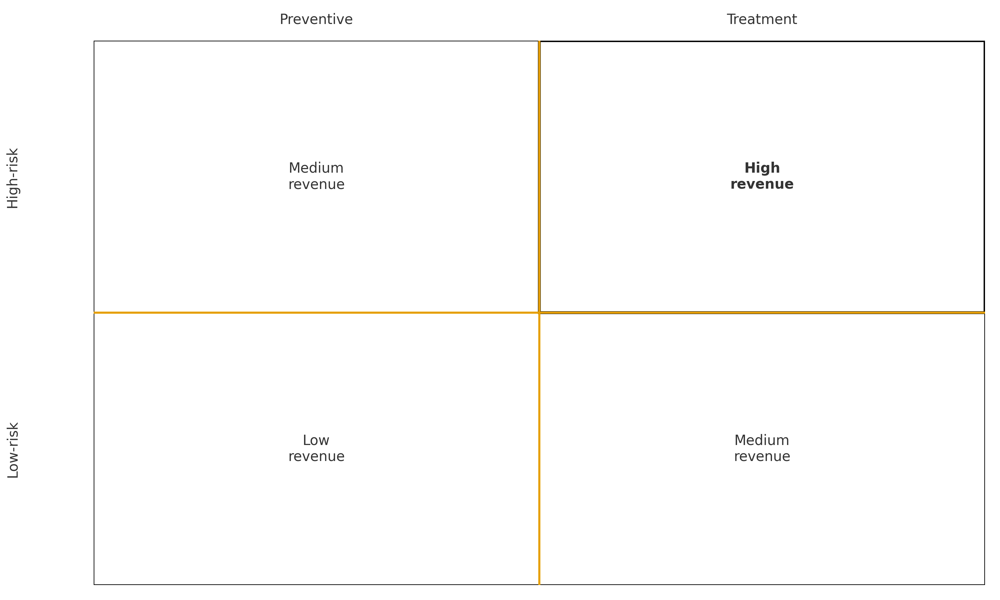
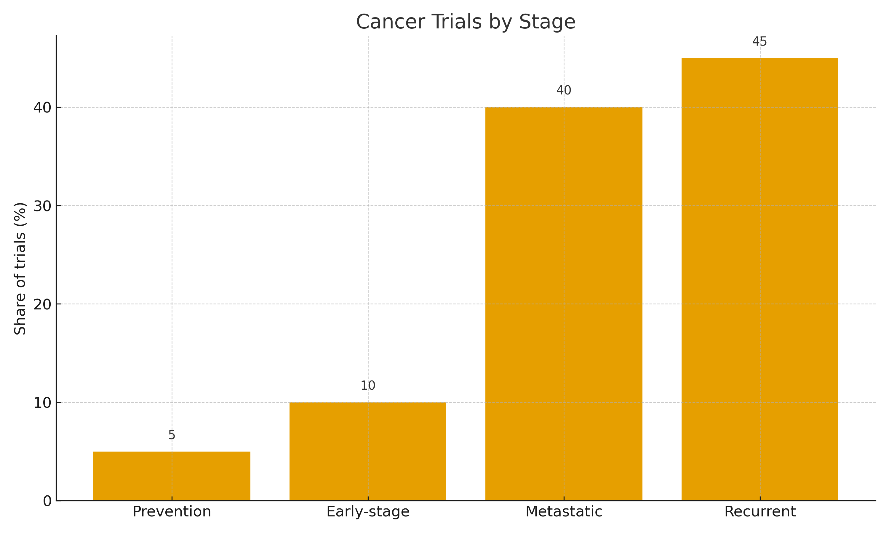
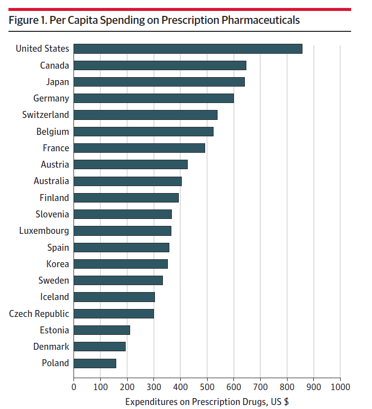
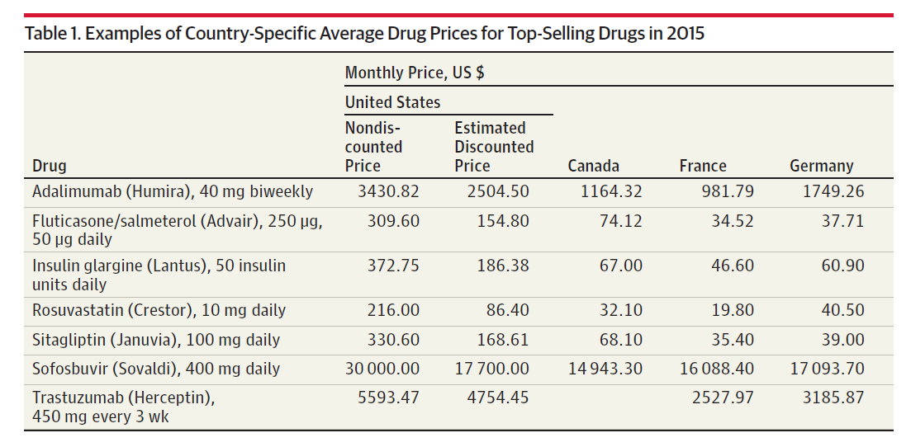
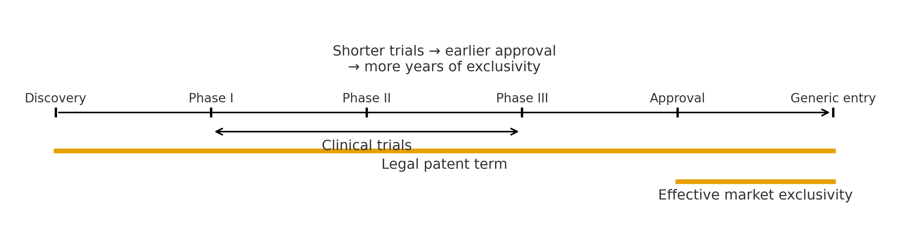
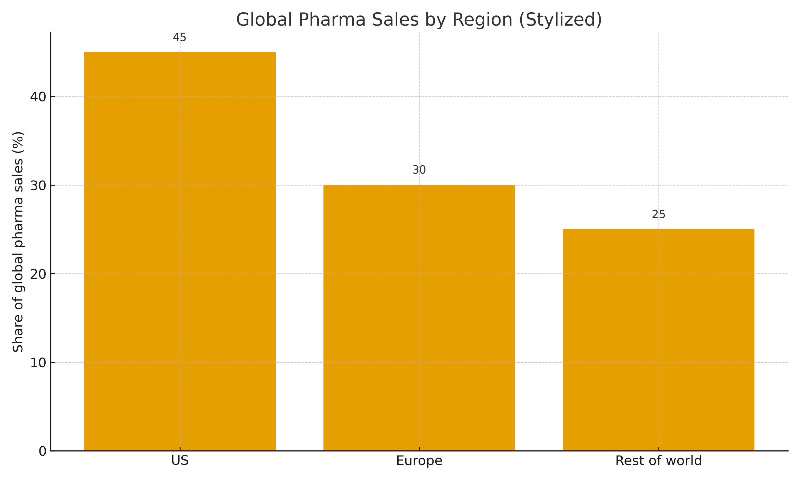

How would you define “innovation” in pharma?



The High Cost of Prescription Drugs in the United States: Origins and Prospects for Reform


But…

Limited competition even for brand name drugs with some substitutes. Why?
Firms can also deter generic entry, via:
Barriers to substituting brand name drugs with generic drugs even after generic entry:
Other barriers to competition among generics and brand name:
“The investigation revealed, for example, that Turing received ‘no pushback from payors’ when it increased ‘Chenodal price 5x… [Thiola] price 21x… [and Daraprim] price 43x.’
Industry argument that significant R&D costs necessitate higher prices
But…
Federal Policies:
State Policies:
